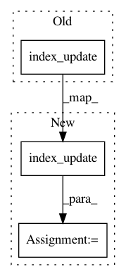

9b7a8715fd593a7854c32cb3b043733208103074,tensorly/parafac2_tensor.py,,parafac2_to_tensor,#Any#,358
Before Change
tensor = T.zeros((A.shape[0], max(lengths), C.shape[0]), **T.context(slices[0]))
for i, (slice_, length) in enumerate(zip(slices, lengths)):
T.index_update(tensor, T.index[i, :length], slice_)
return tensor
After Change
tensor = T.zeros((A.shape[0], max(lengths), C.shape[0]), **T.context(slices[0]))
for i, (slice_, length) in enumerate(zip(slices, lengths)):
tensor = T.index_update(tensor, T.index[i, :length], slice_)
return tensor
def parafac2_to_unfolded(parafac2_tensor, mode):
In pattern: SUPERPATTERN
Frequency: 9
Non-data size: 3
Instances
Project Name: tensorly/tensorly
Commit Name: 9b7a8715fd593a7854c32cb3b043733208103074
Time: 2020-04-29
Author: jean.kossaifi@gmail.com
File Name: tensorly/parafac2_tensor.py
Class Name:
Method Name: parafac2_to_tensor
Project Name: tensorly/tensorly
Commit Name: 2e29e6b41bc07642c01a51eb3c2387299bb59c58
Time: 2020-05-24
Author: roald.marie@gmail.com
File Name: tensorly/decomposition/parafac2.py
Class Name:
Method Name: _compute_projections
Project Name: tensorly/tensorly
Commit Name: 8075792a34bb6f8fd864022d21c1ae5d11e41c41
Time: 2020-05-24
Author: roald.marie@gmail.com
File Name: tensorly/decomposition/tests/test_parafac2.py
Class Name:
Method Name: test_parafac2_to_tensor
Project Name: tensorly/tensorly
Commit Name: 9b7a8715fd593a7854c32cb3b043733208103074
Time: 2020-04-29
Author: jean.kossaifi@gmail.com
File Name: tensorly/decomposition/parafac2.py
Class Name:
Method Name: _project_tensor_slices
Project Name: tensorly/tensorly
Commit Name: be41f195cd0600b70ec66ac48ca0c4c083b1e42d
Time: 2020-08-28
Author: jean.kossaifi@gmail.com
File Name: tensorly/decomposition/candecomp_parafac.py
Class Name:
Method Name: initialize_kruskal
Project Name: tensorly/tensorly
Commit Name: be41f195cd0600b70ec66ac48ca0c4c083b1e42d
Time: 2020-08-28
Author: jean.kossaifi@gmail.com
File Name: tensorly/tests/test_backend.py
Class Name:
Method Name: test_index_update
Project Name: tensorly/tensorly
Commit Name: 10a6518986bad8bd0eed0f2287922b0d6612e033
Time: 2021-02-25
Author: caglayan.tuna@irisa.fr
File Name: tensorly/tenalg/proximal.py
Class Name:
Method Name: hals_nnls
Project Name: tensorly/tensorly
Commit Name: 42172eca8c4b467690de486bb23914bd032c5d30
Time: 2020-12-24
Author: roald.marie@gmail.com
File Name: tensorly/decomposition/parafac2.py
Class Name:
Method Name: _pad_by_zeros
Project Name: tensorly/tensorly
Commit Name: 4d6062e2e455e8f4dfebc3cd619ae014990d81f0
Time: 2021-02-25
Author: caglayan.tuna@irisa.fr
File Name: tensorly/tenalg/proximal.py
Class Name:
Method Name: hals_nnls